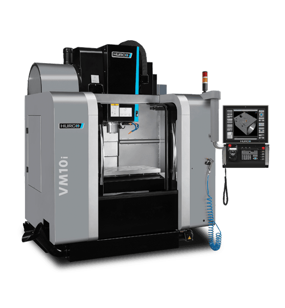

Milling is the most common type of CNC machining, and it is the process most people picture when they think of a CNC machine. A mill uses a rotating cutting tool with several sharp edges to remove material from a part that is clamped to the machine table. By moving the tool and the table along the X, Y, and Z axes, a mill can create flat faces, pockets, slots, holes, and complex 3D shapes. In aerospace, milling is used to make a huge number of structural parts, from small brackets to wing spars that are several feet long.How milling works
On a typical vertical machining center (VMC), the spindle points straight down and holds the cutting tool. The table moves the part left and right (X) and forward and back (Y), while the spindle moves up and down (Z). A horizontal machining center (HMC) has the spindle on its side instead, which helps chips fall away from the part and makes it easier to work on several sides of a part using a rotating table.
Two numbers control almost everything about a milling cut. The spindle speed is how fast the tool spins, measured in revolutions per minute (RPM). The feed rate is how fast the tool moves through the material, usually in inches or millimeters per minute. If these are set correctly, each tooth takes a small, clean chip and the tool lasts a long time. If they are set wrong, the tool can rub, chatter, overheat, or even break.
Common milling operations
- Face milling: Cutting a large flat surface across the top of a part, usually as the first operation
- Pocketing: Clearing out material inside a closed boundary to create a recess, like the lightening pockets in a wing rib
- Contouring: Following the outside or inside profile of a part to cut its final shape
- Slotting: Cutting a narrow channel the full width of the tool
- Drilling and tapping: Making holes and cutting threads into them for fasteners
- 3D surfacing: Using a ball-end mill to take many small passes over a curved surface
Climb vs. conventional milling
The direction the tool travels compared to the way it is spinning makes a big difference in how the cut behaves.
Climb milling
In climb milling, the tool “climbs” into the material, so each tooth starts with a thick chip and ends with a thin one. This pushes heat into the chip instead of the part, leaves a better surface finish, and is easier on the tool. On modern CNC machines with tight, backlash-free ball screws, climb milling is almost always the preferred choice.
Conventional milling
In conventional milling, each tooth starts with a thin chip and ends with a thick one. The tooth rubs a little before it starts cutting, which creates more heat and tool wear. It is still useful on older manual machines, or when cutting through a hard outer layer like the scale on a casting.
Milling in aerospace
 Older aircraft were built from hundreds of small sheet metal
pieces riveted together. Today, many of those assemblies are
replaced by monolithic parts, which are machined out of a
single thick plate of aluminum. A wing rib, spar, or fuselage
bulkhead might start as a plate weighing hundreds of pounds and
end up as a light, pocketed part with thin walls and floors. Fewer
parts means fewer fasteners, less assembly time, and a lighter
airplane.
Older aircraft were built from hundreds of small sheet metal
pieces riveted together. Today, many of those assemblies are
replaced by monolithic parts, which are machined out of a
single thick plate of aluminum. A wing rib, spar, or fuselage
bulkhead might start as a plate weighing hundreds of pounds and
end up as a light, pocketed part with thin walls and floors. Fewer
parts means fewer fasteners, less assembly time, and a lighter
airplane.
Machining these parts takes special techniques. Aluminum is cut using high-speed machining, where the spindle can spin at 20,000 RPM or more so large amounts of material can be removed quickly. The thin walls can vibrate and bend, so programmers leave extra material to support the part until the final passes. Titanium is the opposite. It has to be cut slowly, with lots of coolant, using toolpaths that keep the tool engaged evenly so it doesn’t overheat.
Milling cutters
-
End mills
- The most common milling tool. Cuts on both the sides and the bottom, and is used for pockets, slots, and profiles.
-
Ball-end mills
- Have a rounded tip for cutting 3D curved surfaces and fillets.
-
Face mills
- Large diameter cutters with replaceable carbide inserts, used to flatten big surfaces quickly.
-
Drills and taps
- Used to make the thousands of fastener holes found on an aircraft structure.